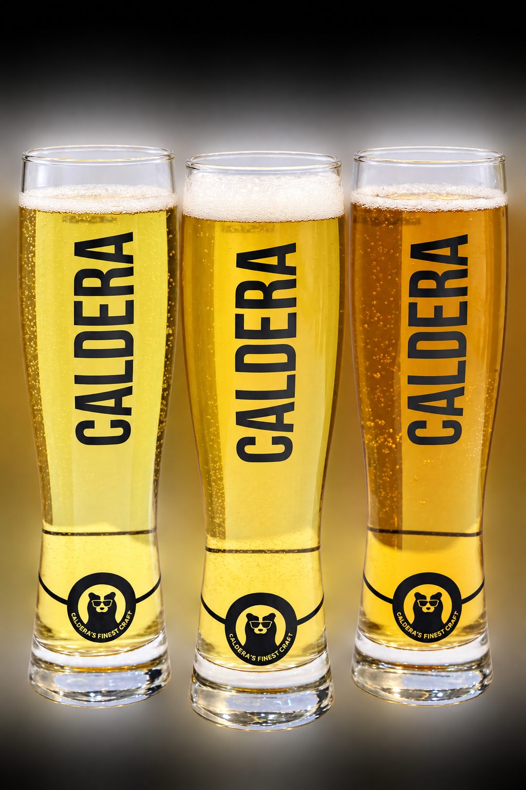

Questions? We've got answers.
A quick guide to craft beer, our styles, and how to enjoy Caldera at its best.
What is craft beer?
Craft beer is beer made by small, independent breweries using traditional methods and high-quality ingredients. It's brewed in limited batches, without shortcuts, and is known for its rich flavour, distinctive styles and strong local identity.
What is the difference between craft beer and regular beer?
Regular, commercial beer is mass-produced by large breweries for a mild, uniform taste that's the same everywhere — often using adjuncts like rice or corn to keep costs down. Craft beer is brewed in smaller batches by independent brewers, with better malts and specialty hops, giving you a bolder, more flavourful and more varied beer.
What are lager and ale?
They're the two main families of beer, set apart by how they ferment. Ale is brewed with top-fermenting yeast at warmer temperatures for a richer, fruitier, more aromatic character — our Witbier is an ale. Lager uses bottom-fermenting yeast at cooler temperatures and is cold-stored, or 'lagered', for a clean, crisp, refreshing taste — our Blue pilsner is a lager.
How do Caldera beers differ from the rest?
Caldera is craft, not commercial — brewed in small batches with quality ingredients and real character, rather than mass-produced for uniformity. It's Calcutta's own, made locally in distinct styles, so you get more flavour, more variety, and a beer with a genuine local identity.
Why is my Caldera a little cloudy, or does it have some sediment?
That's natural — especially in our wheat beers. A style like the Witbier is meant to be cloudy, thanks to the wheat and suspended yeast, and craft beer is often unfiltered. So a little haze or settling is a sign of character, not a fault.
Who makes Caldera?
Caldera — Calcutta's Finest Craft — is brewed by Karnani FnB Specialities LLP, based in Kolkata.
Ask us anything.
Can't find what you're looking for, or want to know where to grab a Caldera? We're always happy to help.
Get in Touch